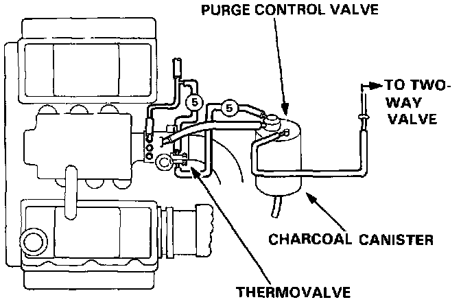
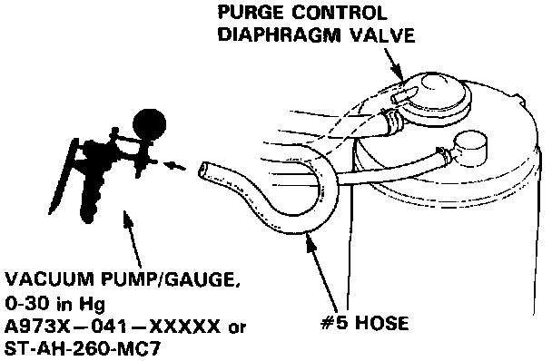

Coupe
COLD ENGINE
1. Check the vacuum line for proper connection, cracks, blockage or disconnected hose.

2. Disconnect #5 hose at the purge control diaphragm valve (on the charcoal canister) and connect a vacuum gauge to the hose.
3. Start the engine and allow it to idle.
NOTE: Engine coolant temperature must be below 70°C (158°F).
Vacuum should not be available.
- If there is vacuum, replace the thermovalve and retest.